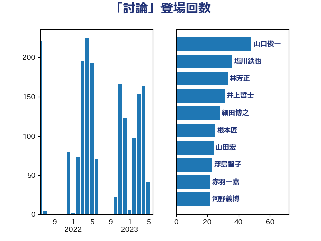

単語「討論」

| 足立康史 | 日本維新の会 | 42 回 |
| 山東昭子 | 自由民主党 | 40 回 |
| 井上哲士 | 日本共産党 | 36 回 |
| 木原誠二 | 自由民主党 | 35 回 |
| 山添拓 | 日本共産党 | 33 回 |
| 塩川鉄也 | 日本共産党 | 31 回 |
| 森屋宏 | 自由民主党 | 29 回 |
| 山口俊一 | 自由民主党 | 28 回 |
| あべ俊子 | 自由民主党 | 27 回 |
| 太田房江 | 自由民主党 | 27 回 |
| 細田博之 | 自由民主党 | 26 回 |
| 高木毅 | 自由民主党 | 26 回 |
| 本村伸子 | 日本共産党 | 25 回 |
| 長峯誠 | 自由民主党 | 25 回 |
| 上月良祐 | 自由民主党 | 24 回 |
| 山本順三 | 自由民主党 | 24 回 |
| 田村智子 | 日本共産党 | 23 回 |
| 義家弘介 | 自由民主党 | 22 回 |
| 赤羽一嘉 | 公明党 | 22 回 |
| 上野賢一郎 | 自由民主党 | 21 回 |
| 高鳥修一 | 自由民主党 | 21 回 |
| 赤嶺政賢 | 日本共産党 | 18 回 |
| あかま二郎 | 自由民主党 | 17 回 |
| 平木大作 | 公明党 | 17 回 |
| 越智隆雄 | 自由民主党 | 17 回 |
| 馬場成志 | 自由民主党 | 17 回 |
| 礒崎哲史 | 国民民主党 | 16 回 |
| 中根一幸 | 自由民主党 | 15 回 |
| 伊藤岳 | 日本共産党 | 15 回 |
| 吉良よし子 | 日本共産党 | 15 回 |
| 柴田巧 | 日本維新の会 | 15 回 |
| 根本匠 | 自由民主党 | 15 回 |
| 城内実 | 自由民主党 | 14 回 |
| 石原宏高 | 自由民主党 | 14 回 |
| 佐藤信秋 | 自由民主党 | 13 回 |
| 古屋範子 | 公明党 | 13 回 |
| 山本香苗 | 公明党 | 13 回 |
| 岩渕友 | 日本共産党 | 13 回 |
| 穀田恵二 | 日本共産党 | 13 回 |
| 宮本徹 | 日本共産党 | 12 回 |
| 斎藤嘉隆 | 立憲民主党 | 12 回 |
| 豊田俊郎 | 自由民主党 | 12 回 |
| 鈴木馨祐 | 自由民主党 | 12 回 |
| 倉林明子 | 日本共産党 | 11 回 |
| 枝野幸男 | 立憲民主党 | 11 回 |
| 高橋千鶴子 | 日本共産党 | 11 回 |
| 伊波洋一 | 無所属 | 10 回 |
| 東徹 | 日本維新の会 | 10 回 |
| 松村祥史 | 自由民主党 | 10 回 |
| 浅野哲 | 国民民主党 | 10 回 |
| 舩後靖彦 | れいわ新選組 | 10 回 |
| 薗浦健太郎 | 自由民主党 | 10 回 |
| 金田勝年 | 自由民主党 | 10 回 |
| 宮本岳志 | 日本共産党 | 9 回 |
| 打越さく良 | 立憲民主党 | 9 回 |
| 橋本岳 | 自由民主党 | 9 回 |
| 伊東良孝 | 自由民主党 | 8 回 |
| 大塚拓 | 自由民主党 | 8 回 |
| 山田宏 | 自由民主党 | 8 回 |
| 森山浩行 | 立憲民主党 | 8 回 |
| 矢倉克夫 | 公明党 | 8 回 |
| 石井浩郎 | 自由民主党 | 8 回 |
| 石橋通宏 | 立憲民主党 | 8 回 |
| 若宮健嗣 | 自由民主党 | 8 回 |
| 野村哲郎 | 自由民主党 | 8 回 |
| 馬淵澄夫 | 立憲民主党 | 8 回 |
| 古賀之士 | 立憲民主党 | 7 回 |
| 吉田はるみ | 立憲民主党 | 7 回 |
| 小沼巧 | 立憲民主党 | 7 回 |
| 小西洋之 | 立憲民主党 | 7 回 |
| 平口洋 | 自由民主党 | 7 回 |
| 柚木道義 | 立憲民主党 | 7 回 |
| 柳ヶ瀬裕文 | 日本維新の会 | 7 回 |
| 源馬謙太郎 | 立憲民主党 | 7 回 |
| 田村貴昭 | 日本共産党 | 7 回 |
| 石井苗子 | 日本維新の会 | 7 回 |
| 芳賀道也 | 国民民主党 | 7 回 |
| 長浜博行 | 無所属 | 7 回 |
| 音喜多駿 | 日本維新の会 | 7 回 |
| 高木かおり | 日本維新の会 | 7 回 |
| 原口一博 | 立憲民主党 | 6 回 |
| 大石あきこ | れいわ新選組 | 6 回 |
| 守島正 | 日本維新の会 | 6 回 |
| 新妻秀規 | 公明党 | 6 回 |
| 林芳正 | 自由民主党 | 6 回 |
| 永岡桂子 | 自由民主党 | 6 回 |
| 笠井亮 | 日本共産党 | 6 回 |
| 藤田文武 | 日本維新の会 | 6 回 |
| 道下大樹 | 立憲民主党 | 6 回 |
| 長谷川岳 | 自由民主党 | 6 回 |
| 階猛 | 立憲民主党 | 6 回 |
| 高良鉄美 | 無所属 | 6 回 |
| 前原誠司 | 国民民主党 | 5 回 |
| 吉川元 | 立憲民主党 | 5 回 |
| 岸真紀子 | 立憲民主党 | 5 回 |
| 本庄知史 | 立憲民主党 | 5 回 |
| 杉久武 | 公明党 | 5 回 |
| 杉尾秀哉 | 立憲民主党 | 5 回 |
| 櫻井周 | 立憲民主党 | 5 回 |
| 浜地雅一 | 公明党 | 5 回 |
| 熊谷裕人 | 立憲民主党 | 5 回 |
| 片山大介 | 日本維新の会 | 5 回 |
| 玉木雄一郎 | 国民民主党 | 5 回 |
| 田島麻衣子 | 立憲民主党 | 5 回 |
| 石川大我 | 立憲民主党 | 5 回 |
| 石田真敏 | 自由民主党 | 5 回 |
| 緒方林太郎 | 無所属 | 5 回 |
| 野田佳彦 | 立憲民主党 | 5 回 |
| 青木一彦 | 自由民主党 | 5 回 |
| たがや亮 | れいわ新選組 | 4 回 |
| 伊藤孝恵 | 国民民主党 | 4 回 |
| 伊藤忠彦 | 自由民主党 | 4 回 |
| 勝部賢志 | 立憲民主党 | 4 回 |
| 古川俊治 | 自由民主党 | 4 回 |
| 吉川沙織 | 立憲民主党 | 4 回 |
| 安江伸夫 | 公明党 | 4 回 |
| 小池晃 | 日本共産党 | 4 回 |
| 小沢雅仁 | 立憲民主党 | 4 回 |
| 後藤祐一 | 立憲民主党 | 4 回 |
| 志位和夫 | 日本共産党 | 4 回 |
| 櫛渕万里 | れいわ新選組 | 4 回 |
| 田村まみ | 国民民主党 | 4 回 |
| 福山哲郎 | 立憲民主党 | 4 回 |
| 福岡資麿 | 自由民主党 | 4 回 |
| 稲津久 | 公明党 | 4 回 |
| 米山隆一 | 立憲民主党 | 4 回 |
| 紙智子 | 日本共産党 | 4 回 |
| 舟山康江 | 国民民主党 | 4 回 |
| 谷田川元 | 立憲民主党 | 4 回 |
| 金子恭之 | 自由民主党 | 4 回 |
| 関芳弘 | 自由民主党 | 4 回 |
| 阿部知子 | 立憲民主党 | 4 回 |
| 佐々木さやか | 公明党 | 3 回 |
| 堤かなめ | 立憲民主党 | 3 回 |
| 島尻安伊子 | 自由民主党 | 3 回 |
| 市村浩一郎 | 日本維新の会 | 3 回 |
| 徳永エリ | 立憲民主党 | 3 回 |
| 森屋隆 | 立憲民主党 | 3 回 |
| 森英介 | 自由民主党 | 3 回 |
| 浅田均 | 日本維新の会 | 3 回 |
| 浜口誠 | 国民民主党 | 3 回 |
| 清水貴之 | 日本維新の会 | 3 回 |
| 石垣のりこ | 立憲民主党 | 3 回 |
| 福島伸享 | 無所属 | 3 回 |
| 稲富修二 | 立憲民主党 | 3 回 |
| こやり隆史 | 自由民主党 | 2 回 |
| 上川陽子 | 自由民主党 | 2 回 |
| 上田清司 | 国民民主党 | 2 回 |
| 中司宏 | 日本維新の会 | 2 回 |
| 中島克仁 | 立憲民主党 | 2 回 |
| 丸川珠代 | 自由民主党 | 2 回 |
| 井坂信彦 | 立憲民主党 | 2 回 |
| 今枝宗一郎 | 自由民主党 | 2 回 |
| 伊佐進一 | 公明党 | 2 回 |
| 佐藤英道 | 公明党 | 2 回 |
| 古川元久 | 国民民主党 | 2 回 |
| 坂本祐之輔 | 立憲民主党 | 2 回 |
| 堀井巌 | 自由民主党 | 2 回 |
| 堀場幸子 | 日本維新の会 | 2 回 |
| 大河原まさこ | 立憲民主党 | 2 回 |
| 山下芳生 | 日本共産党 | 2 回 |
| 山本剛正 | 日本維新の会 | 2 回 |
| 山田賢司 | 自由民主党 | 2 回 |
| 岡本あき子 | 立憲民主党 | 2 回 |
| 岩谷良平 | 日本維新の会 | 2 回 |
| 川田龍平 | 立憲民主党 | 2 回 |
| 平将明 | 自由民主党 | 2 回 |
| 平林晃 | 公明党 | 2 回 |
| 掘井健智 | 日本維新の会 | 2 回 |
| 松島みどり | 自由民主党 | 2 回 |
| 松沢成文 | 日本維新の会 | 2 回 |
| 柴山昌彦 | 自由民主党 | 2 回 |
| 森本真治 | 立憲民主党 | 2 回 |
| 浜田聡 | NHK党 | 2 回 |
| 浜田靖一 | 自由民主党 | 2 回 |
| 浦野靖人 | 日本維新の会 | 2 回 |
| 海江田万里 | 立憲民主党 | 2 回 |
| 渡辺周 | 立憲民主党 | 2 回 |
| 滝波宏文 | 自由民主党 | 2 回 |
| 白石洋一 | 立憲民主党 | 2 回 |
| 石井正弘 | 自由民主党 | 2 回 |
| 石川博崇 | 公明党 | 2 回 |
| 神津たけし | 立憲民主党 | 2 回 |
| 神田憲次 | 自由民主党 | 2 回 |
| 細田健一 | 自由民主党 | 2 回 |
| 自見はなこ | 自由民主党 | 2 回 |
| 落合貴之 | 立憲民主党 | 2 回 |
| 藤井比早之 | 自由民主党 | 2 回 |
| 西岡秀子 | 国民民主党 | 2 回 |
| 赤木正幸 | 日本維新の会 | 2 回 |
| 輿水恵一 | 公明党 | 2 回 |
| 酒井庸行 | 自由民主党 | 2 回 |
| 野田聖子 | 自由民主党 | 2 回 |
| 鈴木淳司 | 自由民主党 | 2 回 |
| 長友慎治 | 国民民主党 | 2 回 |
| 阿部司 | 日本維新の会 | 2 回 |
| 阿部弘樹 | 日本維新の会 | 2 回 |
| 青山周平 | 自由民主党 | 2 回 |
| 青柳仁士 | 日本維新の会 | 2 回 |
| 馬場伸幸 | 日本維新の会 | 2 回 |
| おおつき紅葉 | 立憲民主党 | 1 回 |
| 三ッ林裕巳 | 自由民主党 | 1 回 |
| 三木圭恵 | 日本維新の会 | 1 回 |
| 中谷元 | 自由民主党 | 1 回 |
| 串田誠一 | 日本維新の会 | 1 回 |
| 丹羽秀樹 | 自由民主党 | 1 回 |
| 伊藤孝江 | 公明党 | 1 回 |
| 北神圭朗 | 無所属 | 1 回 |
| 吉田忠智 | 立憲民主党 | 1 回 |
| 吉田統彦 | 立憲民主党 | 1 回 |
| 嘉田由紀子 | 無所属 | 1 回 |
| 國重徹 | 公明党 | 1 回 |
| 大塚耕平 | 国民民主党 | 1 回 |
| 大岡敏孝 | 自由民主党 | 1 回 |
| 奥野総一郎 | 立憲民主党 | 1 回 |
| 室井邦彦 | 日本維新の会 | 1 回 |
| 宮口治子 | 立憲民主党 | 1 回 |
| 小熊慎司 | 立憲民主党 | 1 回 |
| 山井和則 | 立憲民主党 | 1 回 |
| 山口那津男 | 公明党 | 1 回 |
| 山崎誠 | 立憲民主党 | 1 回 |
| 山本太郎 | れいわ新選組 | 1 回 |
| 岬麻紀 | 日本維新の会 | 1 回 |
| 庄子賢一 | 公明党 | 1 回 |
| 新藤義孝 | 自由民主党 | 1 回 |
| 杉本和巳 | 日本維新の会 | 1 回 |
| 松下新平 | 自由民主党 | 1 回 |
| 梅村聡 | 日本維新の会 | 1 回 |
| 梶山弘志 | 自由民主党 | 1 回 |
| 浜野喜史 | 国民民主党 | 1 回 |
| 渡海紀三朗 | 自由民主党 | 1 回 |
| 片山さつき | 自由民主党 | 1 回 |
| 牧山ひろえ | 立憲民主党 | 1 回 |
| 牧島かれん | 自由民主党 | 1 回 |
| 田村憲久 | 自由民主党 | 1 回 |
| 石井啓一 | 公明党 | 1 回 |
| 石井章 | 日本維新の会 | 1 回 |
| 福島みずほ | 社会民主党 | 1 回 |
| 竹内真二 | 公明党 | 1 回 |
| 美延映夫 | 日本維新の会 | 1 回 |
| 舞立昇治 | 自由民主党 | 1 回 |
| 茂木敏充 | 自由民主党 | 1 回 |
| 藤原崇 | 自由民主党 | 1 回 |
| 藤岡隆雄 | 立憲民主党 | 1 回 |
| 西村康稔 | 自由民主党 | 1 回 |
| 遠藤敬 | 日本維新の会 | 1 回 |
| 金子恵美 | 立憲民主党 | 1 回 |
| 鈴木庸介 | 立憲民主党 | 1 回 |
| 鎌田さゆり | 立憲民主党 | 1 回 |
| 須藤元気 | 無所属 | 1 回 |
| 高橋克法 | 自由民主党 | 1 回 |